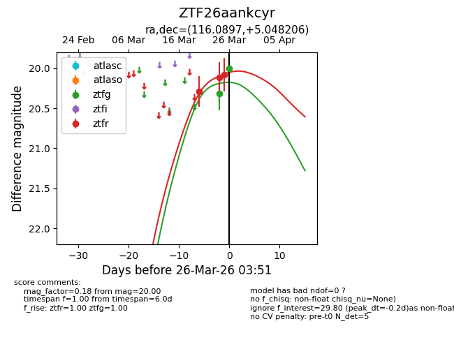
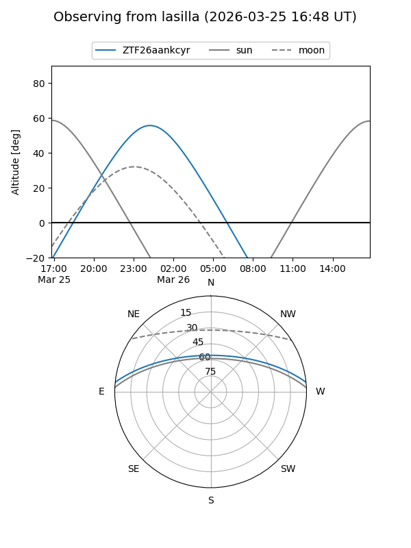
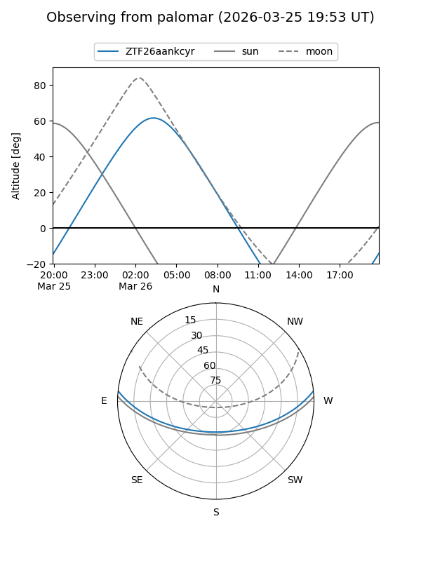
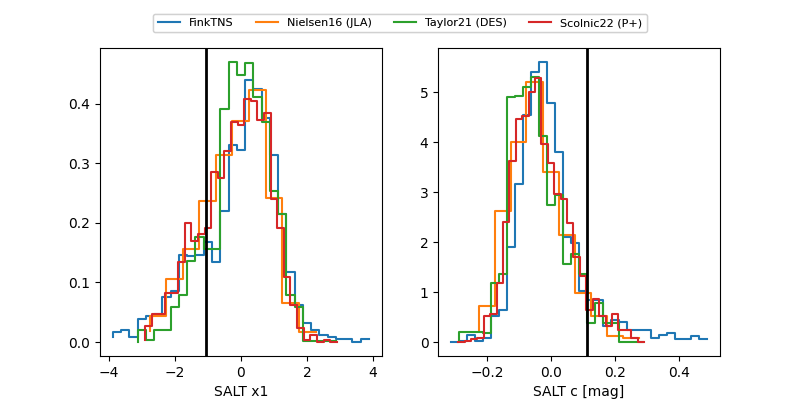

ZTF26aankcyr
Target ZTF26aankcyr at 2026-03-26 03:54
Aliases and brokers:
FINK: link
Lasair: link
ALeRCE: link
alt names
ZTF26aankcyr (ztf,fink_ztf)
Coordinates:
equatorial (ra, dec) = 116.0897,+5.04821
equatorial (HMS+DMS) = 07:44:21.52,+05:02:53.54
galactic (l, b) = (214.4466,+14.06483)
Flags:
Photometry:
last ztfg=20.00, ztfr=20.08
2 ztfg, 3 ztfr detections
Lightcurve

Visibility


Additional plots
